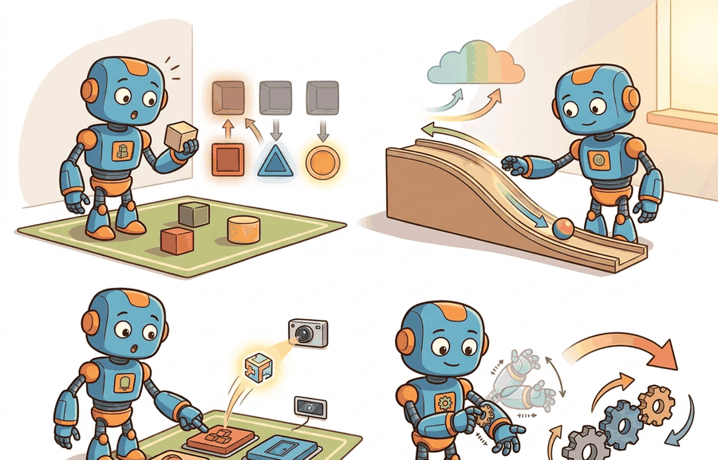

"Choosing an action space is how you tell a robot what kinds of mistakes it is allowed to make."
A Cautious Policy Interface

This section assumes familiarity with the observation/state distinction introduced in section 2.2. The choice of action type directly shapes how rewards and constraints are specified, which is the subject of section 2.4. The discrete-versus-continuous tradeoff resurfaces in section 2.5 when action sequences are composed into trajectories and discounted over a horizon.
A robot hand squeezing a ripe peach can crush it in milliseconds if its fingers receive raw torque commands with no abstraction above them. The same task succeeds reliably when the controller operates on a "gentle grasp" skill that already encodes force limits. That gap, between commanding joints and commanding intentions, is the action-type problem. Embodied AI systems today fail or succeed largely on this single design choice, yet most practitioners inherit an action space without asking why it exists. Here you will map the full spectrum from motor-level signals to chunked multi-step primitives, understand the tradeoffs each tier imposes on learning and safety, and gain a principled vocabulary for choosing the right abstraction for any physical task.
This section develops a design checklist for action representation. Action spaces are not interchangeable wrappers around a model. They define controllability, safety, latency, data requirements, transfer difficulty, and how quickly an agent can recover from an error.
Discrete actions are easy to enumerate, symbolic actions are useful for planning, continuous actions match motors and physics, motor-level actions expose control detail, and chunked actions reduce inference frequency while increasing commitment. OpenVLA-style systems add another pattern: map image and language context to action tokens or continuous control heads that must still respect robot limits.
The action representation decides which layer owns intelligence. A symbolic action delegates execution to skills. A motor command delegates almost nothing. A chunked action delegates timing to the policy for several future steps.
Algorithm: Action Representation Selection Checklist
Input: task description, embodiment spec (actuators, controller rate $f_c$), latency budget $\tau$, safety monitor $\mathcal{S}$
Output: action space $\mathcal{A}$ with level, units, frame, bounds $\mathbf{b}$, rate $f_a$, chunk length $H$, and clipping rule
- Identify the lowest safe actuator level (torque $\tau_j$, joint velocity $\dot{q}$, end-effector delta $\Delta \mathbf{x}$, skill $\pi_k$) that the hardware controller can execute at rate $f_c$.
- Choose the coarsest action level $\ell$ such that recovery from an error is possible within the task's tolerance window $\tau$. If $\tau < 0.5$ s, prefer end-effector or joint level; if $\tau > 2$ s, symbolic or skill level may suffice.
- Assign units, coordinate frame, and sign convention to every action dimension. Record these as executable constants, not comments.
- Set per-dimension bounds $\mathbf{b} = (b_1, \dots, b_d)$ derived from actuator limits and safety monitor $\mathcal{S}$. Verify $\|\alpha\|_\infty \leq \mathbf{b}$ for all sampled policy outputs $\alpha \sim \pi(\cdot \mid o)$.
- If policy inference rate $f_\pi < f_c$, select chunk length $H = \lfloor f_c / f_\pi \rfloor$ and enable temporal ensemble with weight $w_t = \exp(-\lambda t)$ where $\lambda \approx 1/H$.
- Define the clipping rule (clip-and-log, reject-and-hold, or scale) and confirm it produces a valid command even when $\pi$ saturates all dimensions simultaneously.
- Enumerate invalid-command conditions (stale timestamp, out-of-frame, NaN) and specify the fallback action $\alpha_\varnothing$ (hold position, zero velocity, or safe pose $q^*$).
- Inject synthetic saturation ($\alpha = \mathbf{b}$), delay ($\Delta t = 2/f_a$), and mid-chunk observation shift; confirm $\mathcal{S}$ halts execution before joint limits are violated.
- Log raw policy output $\alpha$, executed command $\hat{\alpha} = \mathrm{clip}(\alpha, \mathbf{b})$, and clip magnitude $\|\alpha - \hat{\alpha}\|$ separately from task reward $r$.
- If action validity failures exceed 1% of steps during evaluation, revisit bounds or switch to a finer action level before continuing training.
Before reading on: if you had to pick a single field from the checklist above that practitioners most often leave undefined, which would it be? Most experienced roboticists answer coordinate frame, because an action expressed in the wrong frame looks valid until the arm moves the wrong direction on hardware.
Theory
Let the action space be $\mathcal{A}$. A discrete $\mathcal{A}$ might contain actions such as open, close, or move-left. A continuous $\mathcal{A}$ might be a vector of joint torques, velocities, or end-effector pose deltas. A symbolic $\mathcal{A}$ might contain calls such as pick(red_block). A chunked $\mathcal{A}$ contains sequences of low-level actions emitted at once.
The right action space depends on embodiment and timing. A high-level action can be easier to learn but hides safety-critical details. A low-level action can be precise but makes long-horizon reasoning harder. A chunked action can smooth robot motion and reduce model calls, but it delays correction if the world changes mid-chunk.
Symbolic actions matter in embodied AI because physical robots must plan across many steps in unpredictable environments. A policy operating on raw joint angles must relearn an entire motion sequence if a chair moves three centimeters. A policy operating on navigate_to(kitchen) can reuse that symbol regardless of the exact floor plan, because a lower-level navigation stack resolves the physical details. This separation between what to do and how to do it is what gives symbolic actions their data efficiency on long-horizon tasks. In practice the gap is dramatic: a policy trained on raw joint angles for a multi-room fetch task may require 40,000 episodes to converge, while an equivalent policy operating on symbolic navigation and grasp primitives reaches the same success rate in roughly 500 episodes, because the planner never has to rediscover that "go to kitchen" still works when the sofa moved three centimeters.
Mechanically, a symbolic action is a function call into a library of executable skills. The planner selects a symbol; a skill controller beneath it runs a closed-loop policy that handles contact, timing, and recovery for that specific primitive. The boundary between layers is an API contract: the planner need not know whether grasp(mug) uses force control or position control, but it must know preconditions (the arm is near the mug) and expected postconditions (the mug is held). Violation of either at runtime triggers a replanning event rather than a raw motor fault.
A chunked action is like a ten-pin bowling delivery: the moment the ball leaves your hand you have committed to an entire trajectory covering several meters and roughly two seconds of flight. You cannot steer it mid-lane. What you can do is read the lane conditions carefully before releasing, then release a motion that is smooth and internally consistent enough to handle small surprises on its own. A single-step action, by contrast, is like steering a shopping trolley down a supermarket aisle: you adjust the direction every half-metre as new obstacles appear. Chunking trades mid-course steering for the smoothness and momentum that comes from committing to a well-planned arc.
Consider a specific case: ACT (Action Chunking with Transformers, Zhao et al. 2023) uses chunk lengths of 100 steps at 50 Hz on a bimanual robot, committing 2 seconds of motion before the next policy query. Single-step prediction on the same insertion tasks needed roughly 5 times as many demonstrations to reach the same success rate (as reported in Zhao et al. 2023); chunking compressed that data requirement by smoothing out the compounding errors that accumulate across 100 individual decisions. The system still required a temporal ensemble strategy to recover when the object shifted mid-chunk. By contrast, RT-2 (Brohan et al. 2023) maps image and language tokens to 256 discrete action bins per dimension at 3 Hz, trading motor precision for broad semantic generalization across seen and unseen object categories. The difference is stark: ACT closes the loop 50 times per second, RT-2 closes it 3 times, yet both ship useful robots because they target different failure modes. This tradeoff is called the action-rate versus generality frontier, and every action-space decision lives somewhere on it.
When using ACT-style action chunking, set the temporal ensemble parameter k in the exponential weight formula exp(-k * t) to match your chunk length: a chunk of 100 steps at 50 Hz typically uses k = 0.01, while shorter chunks of 10-20 steps need k values around 0.1 to prevent stale early-chunk predictions from dominating. If you skip this tuning and leave the default k from the reference ACT implementation, you will see jerky transitions at chunk boundaries when deploying on hardware running at a different control rate than the training setup. The LeRobot library exposes this as temporal_ensemble_coeff in the ACT policy config and logs the effective ensemble weight per timestep, which makes mismatches immediately visible.
Every action needs units, limits, rate, coordinate frame, validity checks, and execution semantics. A delta pose in the end-effector frame is different from a target pose in the world frame. A gripper command can mean binary open-close, continuous width, or force-controlled closure.
Worked Example
Code Fragment 2.3.1 compares four action representations for the same tabletop instruction. Notice that each representation shifts responsibility to a different layer of the system.
# Section 2.3: runnable checkpoint for Action types: discrete, continuous, symbolic, motor-level,
# chunked.
# Keep the output small so the evidence record can be inspected directly.
action_spaces = {
"discrete_skill": ["find_object", "grasp", "place"],
"symbolic_call": "place(red_block, tray)",
"continuous_delta": {"dx_m": 0.01, "dy_m": -0.02, "dz_m": 0.00, "grip": 0.7},
"chunked_delta": [
{"dx_m": 0.01, "grip": 0.5},
{"dx_m": 0.01, "grip": 0.7},
{"dx_m": 0.00, "grip": 0.9},
],
}
for name, action in action_spaces.items():
print(name, action)The 14-line comparison becomes one action-space declaration in Gymnasium, one policy configuration in LeRobot, or one action adapter in an OpenVLA-style inference service. The tools handle validation, normalization, batching, and model I/O. The hand-built version remains useful because it exposes units, frames, limits, and chunk length.
Practical Recipe
- Start from the actuator, safety monitor, and controller rate, then move upward to skills.
- Choose the coarsest action that still allows timely recovery.
- Record units, bounds, coordinate frame, rate, and clipping behavior.
- Test action latency by injecting delay and measuring recovery.
- Report action validity failures separately from task failures.
Use symbolic or skill-level actions when task horizons exceed 10 seconds and the skill library is reliable: planning over skills scales better than planning over torques. Switch to end-effector deltas when contact geometry matters but full joint control is unnecessary: most manipulation benchmarks (RLBench, LIBERO) use 6-DoF (six degrees of freedom) end-effector deltas at 10-20 Hz for this reason. Drop to joint or torque level only when compliance, force control, or dynamic tasks (catching, throwing, legged locomotion) require it, because the feedback bandwidth justifies the added policy complexity. Add chunking when policy inference is slower than the control rate: a 3 Hz vision-language model cannot close the loop at 20 Hz, so committing a 7-step chunk bridges the gap.
A high-level action such as pick can hide dangerous low-level motion. A motor-level action can be safe but too hard for long-horizon planning. A chunked action can improve smoothness while delaying correction after a slip, occlusion, or human interruption.
A common mistake is treating action types as interchangeable wrappers that can be swapped late in a project. That assumption is wrong. The action type determines which stack layer owns timing, recovery, safety checking, and contact resolution. Switching from symbolic actions to joint-level commands forces the learned policy to absorb all contact and timing logic that the skill library previously handled. That switch requires different training data, a different controller, and a complete rethink of the safety monitor. The correct mental model: the action type is an architectural boundary. It divides responsibility among the policy, the controller, and the skill library. Changing it restructures all three layers at once.
A service robot team first used symbolic actions for cleaning tasks, then found that furniture avoidance needed continuous velocity control near chair legs. They kept symbolic planning for task order, continuous control for local motion, and a safety monitor that clipped speed near people.
An action space is like a steering wheel: too small and you cannot maneuver, too large and the learner spends half the drive discovering the curb.
Three active directions define where action representation research stands in 2024-2026. First, flow-matching action heads (Physical Intelligence, pi0, Black et al. 2024) replace diffusion denoising chains with a single-pass ODE integration, cutting chunk inference from roughly 100 ms to 10 ms on Franka Panda hardware; this makes 20 Hz closed-loop control viable with a full vision-language backbone and has become the dominant architecture for generalist robot policies in 2025. Second, action tokenization at scale (OpenVLA-OFT, Kim et al. 2024; subsequent fine-tuning studies, 2025) shows that discretizing each of 7 DoF into 256 bins and decoding them autoregressively from a 7B-parameter vision-language model (VLM) reaches 56.5% on BridgeV2 without task-specific pretraining, but the 6 Hz output rate still requires a compliant impedance controller underneath; 2025 work on parallel decoding and speculative action tokens aims to close this rate gap without sacrificing semantic grounding. Third, hierarchical chunking with adaptive commit length (He et al. 2024, GROOT; concurrent work at CMU PerACT group) lets the policy decide at runtime whether to commit a 4-step or 20-step chunk based on predicted uncertainty, outperforming fixed-length chunking on contact-rich tasks where the optimal commit length varies by subtask phase. Open problem suitable for a PhD thesis: none of these systems has a principled method for estimating the minimum safe commit length online, given current contact state and controller bandwidth. A student who formalizes this as a recovery-time lower bound, verifiable from the impedance controller's stiffness and the policy's output uncertainty, could unify the flow-matching, diffusion, and token-autoregressive families under a single deployability criterion.
Take a simple pick-and-place task and write three action interfaces: symbolic skill, end-effector delta, and chunked delta. For each, define the controller that must sit below it.
Can you state your action units, coordinate frame, update rate, action bounds, and clipping behavior without inspecting the policy code?
Action representation is an architectural boundary. A symbolic skill shifts burden to a planner and skill library. An end-effector delta shifts burden to a controller and calibration stack. A joint command shifts burden to the learned policy and safety monitor. A chunked action shifts burden to prediction because the policy commits before seeing every intermediate consequence.
The practical question is not which action type is most elegant. It is which layer should own timing, contact, validity checking, and recovery for the task at hand.
| Tool or Library | Role in This Topic | Builder Advice |
|---|---|---|
| Gymnasium spaces | declares discrete, continuous, multi-discrete, dictionary, and bounded action structures | Use spaces as executable documentation for units, bounds, shapes, and clipping behavior. |
| ROS 2 controllers | execute velocity, position, effort, and trajectory commands under real timing constraints | Use them to check whether the action representation can be executed safely at deployment rate. |
| LeRobot and VLA action adapters | normalize robot actions, action chunks, and policy outputs into deployable commands | Use them when learned action heads must be mapped back to body-specific controllers. |
Audit an action interface before training. The audit should fail if units, frames, rates, bounds, or chunk semantics are absent.
- Name the action level: symbolic, skill, end-effector, joint, torque, velocity, or chunked sequence.
- Record units, coordinate frame, bounds, update rate, controller below the action, and clipping behavior.
- Define what happens when a command is invalid or stale.
- Inject saturation, delay, and mid-chunk observation changes.
- Report action validity failures separately from policy-task failures.
# Audit an action interface for fields needed by a real controller.
action_interface = {
"level": "end_effector_delta",
"units": {"dx": "m", "dy": "m", "dz": "m", "yaw": "rad"},
"frame": "tool0",
"rate_hz": 20,
"bounds": {"dx": 0.02, "dy": 0.02, "dz": 0.015, "yaw": 0.10},
"clip_behavior": "clip_and_log",
"controller_below": "cartesian_impedance",
}
def missing_action_contract(interface: dict[str, object]) -> list[str]:
required = ["level", "units", "frame", "rate_hz", "bounds", "clip_behavior", "controller_below"]
return [key for key in required if key not in interface]
print(missing_action_contract(action_interface))When an action interface fails, ask whether the command was invalid, clipped, stale, in the wrong frame, too coarse, too low-level, or too committed through chunking. Those are different failures and should not be collapsed into "bad policy."
Hands-On Lab: Audit An Action Interface
Objective
Build an action-interface contract for one task and test how clipping, delay, or chunking would change recovery.
What You'll Practice
- Define action units, bounds, frames, and update rate
- Detect missing execution fields before policy training
- Log raw commands, executed commands, and clipping
- Compare correction delay for single-step and chunked actions
Setup
pip install numpy pandasSteps
Step 1: Define the action contract
Write the execution fields before choosing a policy.
Hint
If a controller cannot execute the command, the action representation is not finished.
Step 2: Check for missing execution fields
Audit the contract before running a policy.
required = {"level", "units", "frame", "rate_hz", "bounds", "clip_behavior"}
missing = sorted(required - contract.keys())
assert not missing, f"Action contract missing fields: {missing}"
print({"contract_ready": True, "rate_hz": contract["rate_hz"], "bounds": contract["bounds"]})Hint
Most action bugs hide in units, frames, bounds, and silent clipping.
Step 3: Simulate clipping
Test whether out-of-bounds commands are visible in the log.
command = {"dx": 0.05, "dy": 0.00, "dz": 0.00, "grip": 0.6}
clipped = {**command, "dx": min(command["dx"], contract["bounds"]["dx"])}
clip_amount = command["dx"] - clipped["dx"]
assert clip_amount >= 0.0
print({"raw_dx": command["dx"], "executed_dx": clipped["dx"], "clip_amount": round(clip_amount, 3)})Hint
A clipped command is not the action the policy selected. Log both.
Step 4: Compare commitment length
Record how long the system must continue before it can correct a bad command.
interfaces = [
{"name": "single_delta", "chunk_len": 1, "rate_hz": 20},
{"name": "five_step_chunk", "chunk_len": 5, "rate_hz": 20},
]
for item in interfaces:
item["commitment_ms"] = 1000 * item["chunk_len"] / item["rate_hz"]
print(interfaces)Hint
Chunking can smooth control, but it also delays recovery when observations change.
Expected Output
The completed lab produces a compact action-interface audit showing whether the contract is complete, whether clipping is visible, and how long a chunked command delays correction.
Stretch Goals
- Add a joint-level version and compare its bounds against the end-effector version.
- Add a stale-command rule that holds position when the command age exceeds the control budget.
Complete Solution
The action space is a design commitment. It decides how intelligence, safety, timing, and recovery are divided across the embodied stack.
Design three action spaces for opening a drawer: one symbolic, one end-effector-level, and one joint-level. State one advantage and one risk for each.
What's Next?
Section 2.4 connects those action choices to reward functions, task specifications, and constraints.
Project Ideas
Beginner (weekend): Action-space comparison in Gymnasium CartPole. Implement the same task with a discrete action space (left/right) and a continuous torque action space using Gymnasium, and measure how many training steps each needs to reach a target return; the key challenge is writing a fair comparison that holds all hyperparameters constant except the action space definition itself. Intermediate (1-2 weeks): Chunked vs. single-step pick-and-place in PyBullet. Build a tabletop pick-and-place environment in PyBullet, train a policy using LeRobot with single-step end-effector deltas and again with a 10-step action chunk at the same control rate, then measure success rate and correction latency after mid-task object perturbations; the key challenge is tuning the temporal ensemble coefficient so chunk boundaries do not produce jerky motion on the physical-rate replay. Intermediate (1-2 weeks): Symbolic-to-motor skill bridge in ROS2. Build a two-layer stack in ROS2 where a high-level planner issues symbolic actions such as grasp(cup) and a MoveIt2 skill controller resolves each symbol into joint trajectories, then log precondition failures and replanning events across 50 trials; the key challenge is defining the API contract between layers so a skill failure triggers replanning rather than a raw motor fault.
Bibliography & Further Reading
Foundational References For This Section
Bellman, R.. "A Markovian Decision Process." (1957). https://doi.org/10.1515/9781400835386-007
The mathematical origin of the state, action, transition, and reward framing.
Kaelbling, L. P., Littman, M. L., and Cassandra, A. R.. "Planning and acting in partially observable stochastic domains." (1998). https://www.sciencedirect.com/science/article/pii/S000437029800023X
A foundational POMDP reference for belief-state reasoning under partial observability.
Farama Foundation. "Gymnasium Documentation." (2024). https://gymnasium.farama.org/
The maintained reference for reset, step, spaces, termination, truncation, wrappers, and reproducible environments.